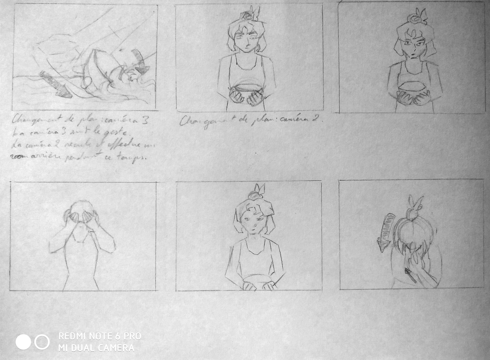
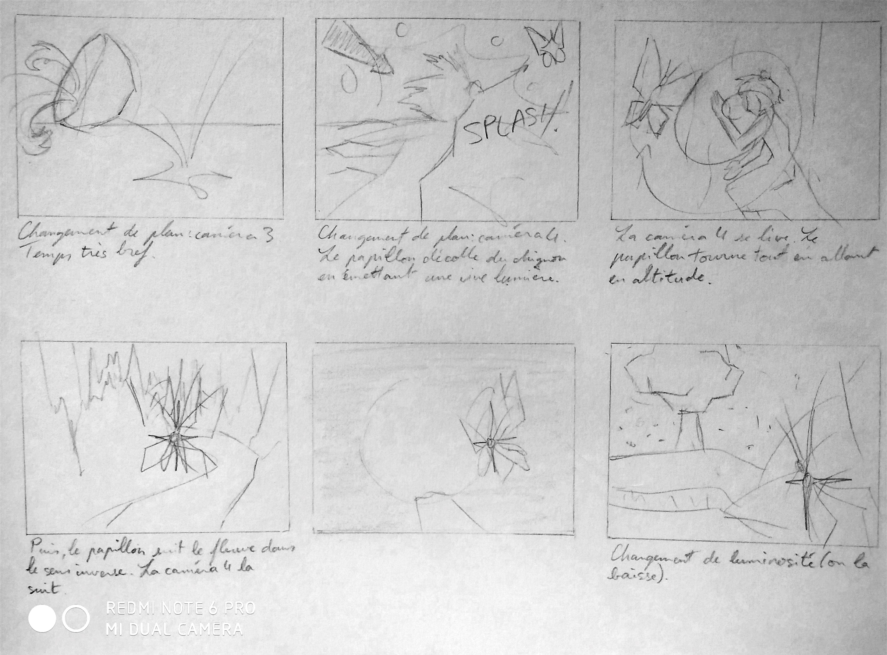

Retour
Storyboard pour le projet Renaissance de l'équipe Genesis
6-7 novembre 2021, crayon graphite, format A4 (21 x 29,7 cm)
Pour l'équipe Genesis, j'ai dessiné un storyboard qui raconte toute l'histoire de Renaissance. Renaissance s'inspire du mythe de Léthé : les âmes des défunts boivent l'eau du fleuve de l'Oubli, oublient tous les souvenirs de leur vie passée et se réincarnent dans le monde des vivants.
La majorité du court-métrage se passe dans les Enfers que représente la grotte. La caméra suit le papillon qui suit le fleuve qui mène au personnage principal, puis l'insecte atterrit sur son chignon. Ce personnage androgyne boit l'eau du fleuve et meurt. Le papillon, plus brillant cette fois-ci, repart dans le sens inverse, vers le monde extérieur.
Storyboard du projet Renaissance (page 1)
Storyboard du projet Renaissance (page 2)
Storyboard du projet Renaissance (page 3)
Retour